Projects
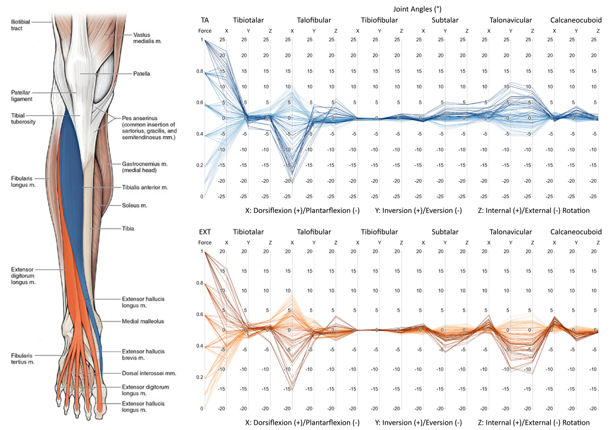
Fine-Tuning Pre-Trained Faster R-CNN to Reduce False Positives in Guardrail Damage Detection from Dashcam Images
- Goal: Characterize how individual extrinsic lower limb muscles influence the kinematics of the ankle and hindfoot joints, addressing limitations of simplified segmental models.
- Contribution: Conducted cadaveric experiments on six fresh-frozen specimens using a tendon force actuator system to independently load six functional muscle groups (TA, EXT, PER, FLX, TP, Achilles). Measured three-dimensional joint rotations with bone-mounted optical motion capture markers and analyzed data using principal component analysis (PCA) and parallel coordinate plots.
- Outcomes: Revealed muscle-specific and shared coordination patterns, posture-dependent constraints, and consistent hindfoot-midfoot coupling. PCA identified key kinematic contributors, highlighting distinct joint-level effects of TA, EXT, PER, FLX, and TP. Findings provide critical data for refining musculoskeletal models and a framework for assessing changes from pathology or surgical interventions.
- Skills: Kinematic analysis, motion capture, robotic cadaveric simulation, biomechanics, experimental design, musculoskeletal modeling, principal component analysis (PCA), parallel analysis, regression analysis.
- Tools: Python, Jupyter Notebook, LabVIEW, 3D segementation, computed tomography, tendon force actuator system, robotic cadaveric simulator, motion capture, PCA, parallel coordinate visualization.
- Reference: [Manuscript in Preparation]
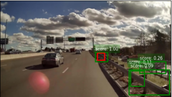
Fine-Tuning Pre-Trained Faster R-CNN to Reduce False Positives in Guardrail Damage Detection from Dashcam Images
- Goal: Develop an automated computer vision system to detect highway guardrail damage, reducing reliance on manual, reactive, and error-prone inspections.
- Contribution: Built a supervised fine-tuning (SFT) pipeline for a pre-trained Faster R-CNN model, applying focal loss to address class imbalance. Explored data augmentation, custom anchor box design, two-stage detection, and post-processing methods (DBSCAN clustering, Soft-NMS). Introduced saliency-based scoring to assess ground truth label quality.
- Outcomes: Reduced false positives from 2.84 to 0.25 per image while maintaining precision and recall. Further improvements achieved with optimized anchor sizes and selective post-processing, though parameter tuning is ongoing. Demonstrated scalability and applicability to broader infrastructure monitoring.
- Skills: Deep learning, computer vision, supervised fine-tuning, object detection, data augmentation, model evaluation.
- Tools: Python, PyTorch, Faster R-CNN, YOLO, focal loss, DBSCAN, Soft-NMS, saliency maps.
- Reference: [GitHub Repository]
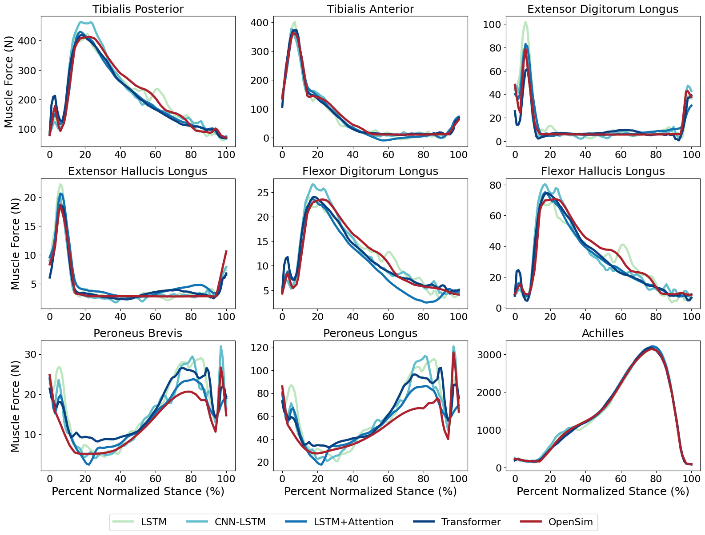
Predicting Lower Limb Muscle Forces from Ground Reaction Forces During Gait Using Sequence and Attention-Based Deep Learning Models
- Goal: Develop deep learning methods to directly predict lower limb muscle forces from ground reaction forces (GRFs) collected during gait, enabling use with portable force plate technology without motion capture or EMG.
- Contribution: Implemented and trained four architectures (LSTM, CNN-LSTM, LSTM+Attention, Transformer) on >13,000 stance phases from treadmill walking data. Generated ground-truth muscle forces for 9 lower limb muscles using OpenSim static optimization. Evaluated models using MAE and R² metrics.
- Outcomes: All models successfully predicted muscle forces from GRFs alone. Attention-based models achieved the highest accuracy (Transformer: MAE 13.69 N, R² = 0.996). Results support the feasibility of using portable force plates for clinical or athletic applications where traditional pipelines are impractical.
- Skills: Deep learning, biomechanics, musculoskeletal modeling, time-series prediction, performance evaluation.
- Tools: PyTorch, Python, OpenSim, treadmill gait dataset, static optimization pipeline.
- Reference: [GitHub Repository]

Cardan Sequence Selection Influences Subtalar and Talonavicular Joint Kinematics
- Goal: Evaluate how the choice of Cardan angle sequence affects the interpretation of three-dimensional joint rotations in the foot and ankle, particularly for joints with multiplanar motion.
- Contribution: Analyzed in vivo biplane fluoroscopy gait data and in vitro cadaveric robotic simulation data to systematically compare six Cardan sequences across the tibiotalar, talofibular, tibiofibular, subtalar, and talonavicular joints.
- Outcomes: Found consistent kinematics across sequences for tibiotalar, talofibular, and tibiofibular joints, supporting ISB-recommended XYZ sequence. Subtalar and talonavicular joints showed substantial sequence-dependent variations, leading to joint- and motion-specific recommendations for optimal sequence selection to minimize crosstalk and improve clinical relevance.
- Skills: Kinematic analysis, motion capture, robotic cadaveric simulation, biomechanics, experimental design, methodological evaluation, statistical analysis, statistical parameteric mapping (SPM).
- Tools: MATLAB, LabVIEW, 3D segementation, computed tomography, biplane fluoroscopy, robotic cadaveric simulator, motion capture, joint-specific anatomical coordinate systems.
- Reference: [Publication]
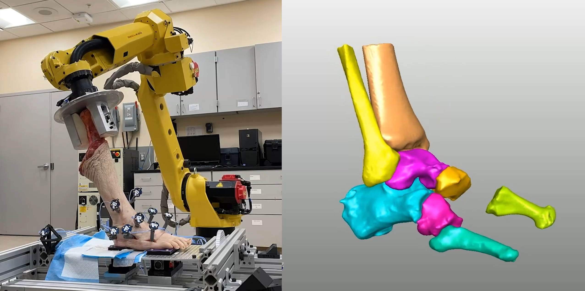
Passive Ankle and Hindfoot Kinematics within a Robot-Driven Tibial Movement Envelope
- Goal: Quantify the passive kinematics and ranges of motion of individual ankle and hindfoot joints to better understand their adaptability and contributions to foot and ankle mobility.
- Contribution: Designed and executed cadaveric experiments using a 6-axis industrial robot to apply prescribed tibial motions with underfoot perturbations. Collected bone-level kinematic data and performed statistical analysis to assess joint-specific adaptations.
- Outcomes: Identified significant passive adaptive changes in hindfoot joints during dorsiflexion/plantarflexion and external/internal rotation, while coronal-plane motions showed minimal adaptability. Results highlighted the role of hindfoot joints in passive mobility and stability of the foot and ankle.
- Skills: Biomechanics, robotic cadaveric simulation, experimental design, statistical analysis, statistical parametric mapping (SPM).
- Tools: MATLAB, LabVIEW, 3D segementation, computed tomography, 6-axis industrial robot, motion capture, joint-specific anatomical coordinate systems.
- Reference: [Publication]
Exploring Text Classification for Predicting Trial Outcomes in Old Bailey Proceedings
- Goal: Predict trial outcomes using machine learning models applied to the Old Bailey court transcripts (Kaggle dataset).
- Contribution: Implemented ID3, Perceptron, SVM, and logistic regression from scratch in Python/NumPy; built and trained a neural network in TensorFlow/Keras to handle dataset nonlinearity.
- Outcomes: Neural network achieved 81% accuracy on the Kaggle evaluation dataset, outperforming other models and ranking 11th out of 142 students.
- Skills: Algorithm implementation, feature engineering, dimensionality reduction, data preprocessing, hyperparameter tuning.
- Tools: Python, NumPy, TensorFlow, Keras.
- Reference: [GitHub Repository]
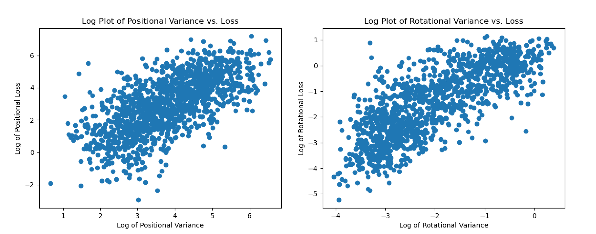
Towards an Autonomous Surgical Retraction System via Uncertainty Quantification
- Goal: Quantify uncertainty in learned surgical soft-tissue manipulation policies within the DeformerNet framework.
- Contribution: Implemented and compared two uncertainty quantification methods (deep ensembles and Monte Carlo dropout) using PyTorch.
- Outcomes: Found that deep ensembles provided more accurate uncertainty estimates, with ensemble variance slopes effectively distinguishing successful from unsuccessful manipulations.
- Skills: Uncertainty quantification, deep learning, model evaluation, surgical robotics research.
- Tools: PyTorch, Python, Jupyter Notebook.
- Reference: [Publication]
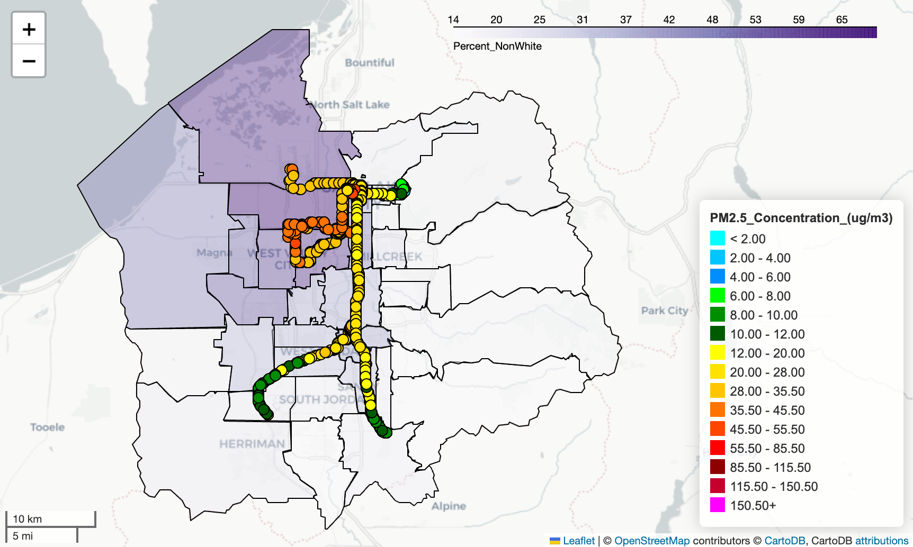
Mobile Air Quality Monitoring in the Salt Lake Valley
- Goal: Explore disparities in air quality exposure across Salt Lake Valley and highlight links to socioeconomic factors.
- Contribution: Visualized geospatial pollutant data from sensors on light-rail cars and e-buses; analyzed correlations with socioeconomic data aggregated by ZCTA.
- Outcomes: Revealed clear disparities in air quality exposure, emphasizing environmental injustice for west-side communities.
- Skills: Geospatial analysis, data visualization, correlation analysis, environmental data science.
- Tools: Python, GeoPandas, Pandas, Matplotlib, Contextily, Folium, Seaborn, scikit-learn, Jupyter Notebook.
- Reference: [GitHub Repository]
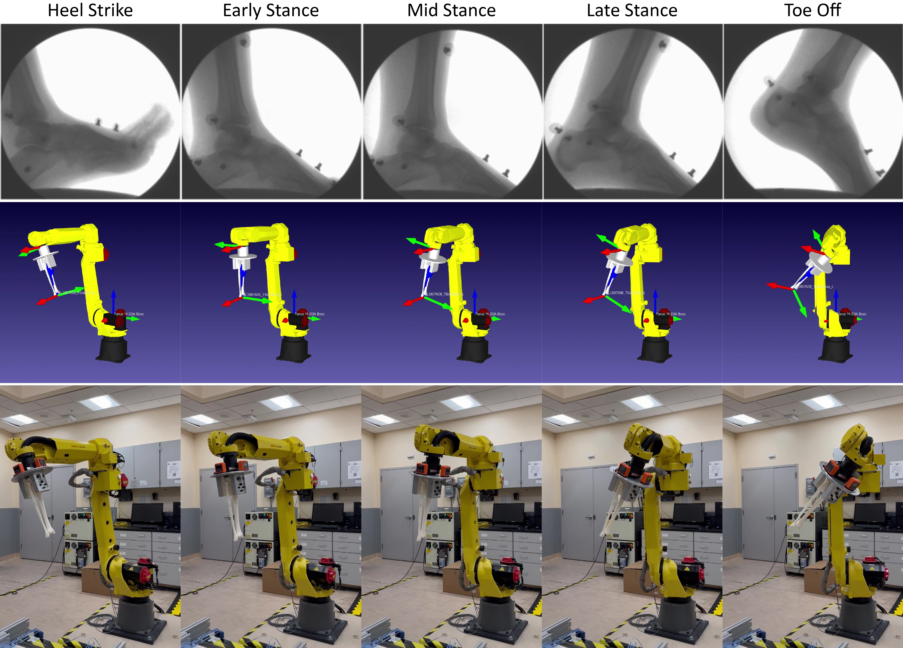
Replicating In Vivo Tibial Motion with a 6-Axis Industrial Robotic Manipulator
- Goal: Replicate 3D in vivo tibial gait motion in a physical setup for biomechanical research and validation.
- Contribution: Reproduced tibial motion captured from biplane fluoroscopy data on a 3D-printed tibia mounted to an industrial 6-axis robotic manipulator.
- Outcomes: Enabled accurate reproduction of human tibial gait motion for experimental analysis and validation of motion capture methods.
- Skills: Biomechanics, motion capture processing, robotics integration, experimental validation.
- Tools: Python, RoboDK, ROS, 3D printing, 6-axis industrial robot.
- Reference: [GitHub Repository]
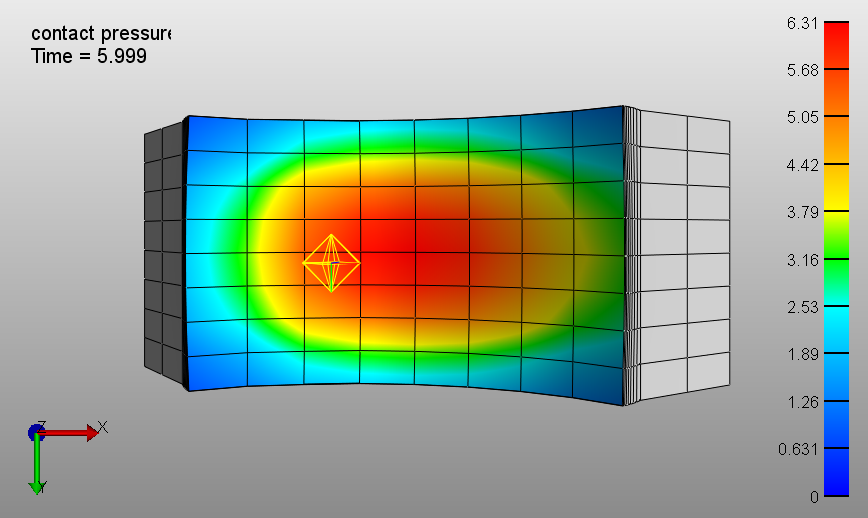
Finite Element Model of Biphasic Contact in the Tibiotalar Joint
- Goal: Investigate how articular morphology influences mechanical contact properties of the tibiotalar joint under healthy and osteoarthritic conditions.
- Contribution: Developed finite element analysis (FEA) models of the tibiotalar joint with varying articular morphologies to simulate biphasic-on-biphasic contact mechanics.
- Outcomes: Provided insights into the progression of osteoarthritis by quantifying differences in joint mechanics across morphological variations.
- Skills: Finite element modeling, biomechanics, computational analysis of joint mechanics.
- Tools: FEBio, Matlab.
- Reference: [GitHub Repository]

Monte Carlo Simulation of the Monty Hall Problem
- Goal: Explore probability and decision-making strategies using the Monty Hall problem.
- Contribution: Implemented Monte Carlo simulations of the game show scenario with three doors, one hiding a car and two hiding goats.
- Outcomes: Demonstrated that switching doors statistically increases the probability of winning from ~33% to ~66%.
- Skills: Probability modeling, simulation, statistical analysis.
- Tools: Julia, Jupyter Notebook.
- Reference: [GitHub Repository]
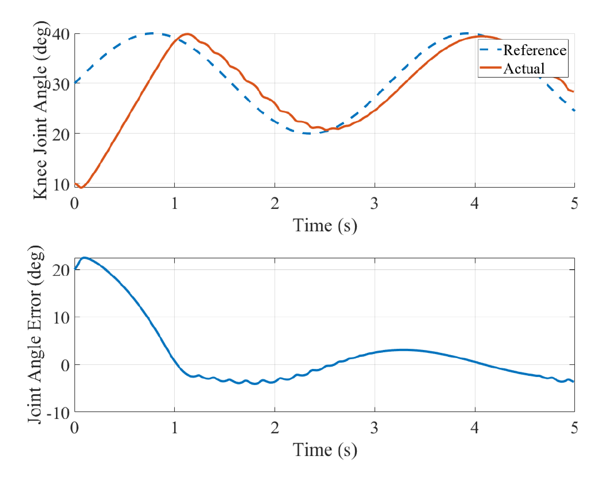
Stability Analysis of a Nonlinear Model Predictive Controller for Functional Electrical Stimulation
- Goal: Investigate control strategies for musculoskeletal models with a focus on stability and movement accuracy.
- Contribution: Examined nonlinear model predictive control (NMPC) stability using Lyapunov theory and tuned a PID controller for leg extension in a musculoskeletal model.
- Outcomes: Demonstrated improved stability and control performance for simulated leg extension tasks.
- Skills: Control theory, musculoskeletal modeling, stability analysis, PID tuning.
- Tools: MATLAB, OpenSim.
- Reference: [GitHub Repository]
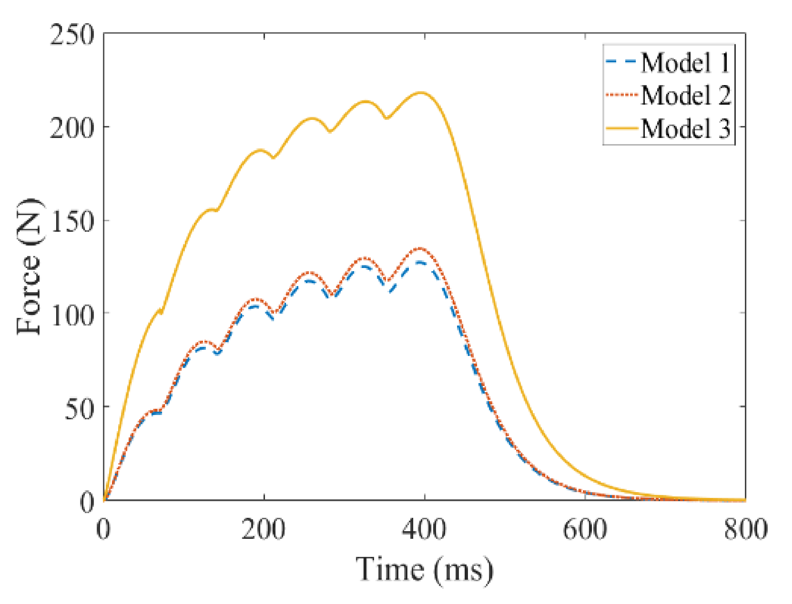
Implementation and Examination of a Mathematical Model for Predicting Muscle Force and Fatigue
- Goal: Model and analyze isometric muscle force generation and fatigue under varying physiological conditions.
- Contribution: Implemented differential equation models of muscle force using MATLAB’s
ode45solver and performed sensitivity analyses on key physiological parameters. - Outcomes: Identified influential parameters affecting force production and fatigue prediction, providing insights into muscle performance modeling.
- Skills: Computational modeling, sensitivity analysis, biomechanics, muscle physiology.
- Tools: MATLAB (
ode45solver). - Reference: [GitHub Repository]
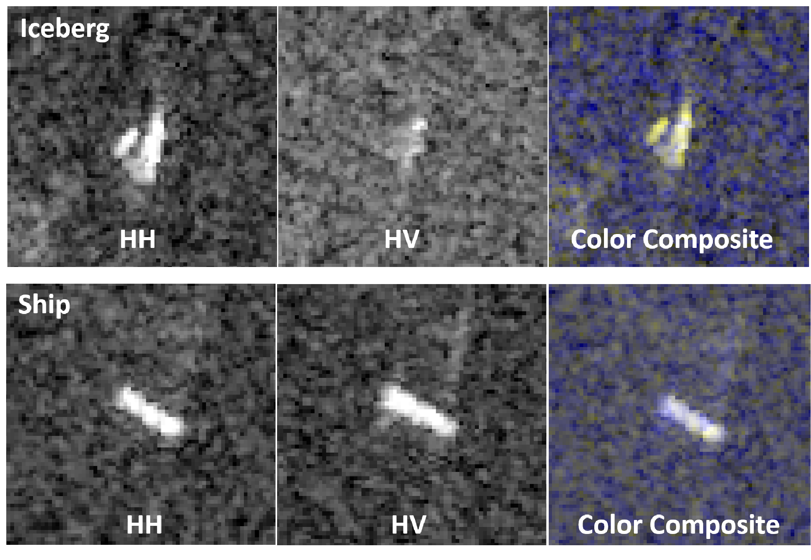
Implementation of Convolutions Neural Networks for Iceberg Classification in Satellite Radar Data
- Goal: Classify satellite images to distinguish between ships and icebergs for remote sensing applications.
- Contribution: Implemented a convolutional neural network (CNN) using Python and TensorFlow/Keras to analyze satellite image data.
- Outcomes: Achieved 87% accuracy on the Kaggle evaluation dataset, demonstrating strong model performance for image classification.
- Skills: Deep learning, computer vision, image classification, model evaluation.
- Tools: Python, TensorFlow, Keras, NumPy, Pandas, Matplotlib.
- Reference: [GitHub Repository]
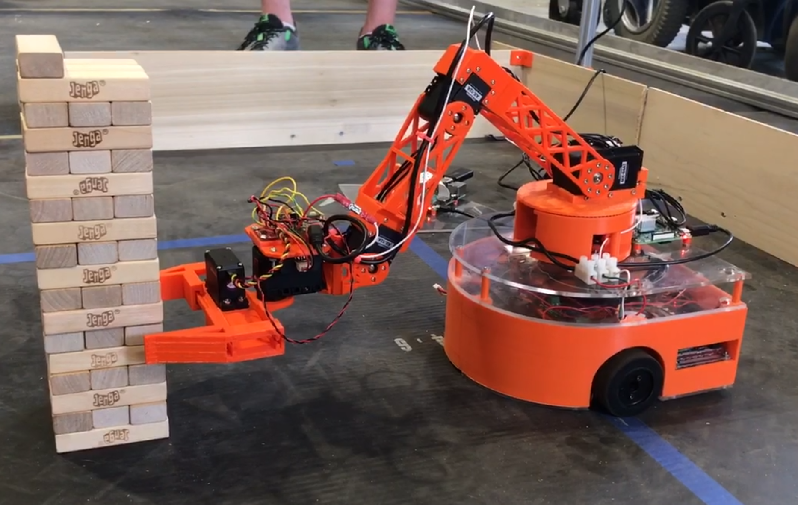
Semi-Autonomous Mobile Robot for Jenga Gameplay
- Goal: Develop a mobile robotic platform with manipulation capabilities for autonomous navigation and object handling.
- Contribution: Built a fully custom mobile robot with a 5-axis manipulator using 3D-printed parts, DC motors, LIDAR, IMUs, and Raspberry Pi microcontrollers. Designed a control system in C++ that integrated LIDAR data for navigation with user input for block picking and manipulation.
- Outcomes: Created a functional prototype demonstrating autonomous navigation and semi-autonomous manipulation tasks, showcasing end-to-end robotic system design.
- Skills: Robotics design, hardware integration, autonomous navigation, manipulation, control systems.
- Tools: C++, Python, MATLAB, Raspberry Pi, LIDAR, IMUs, 3D printing, custom electronics.
- Reference: [GitHub Repository]
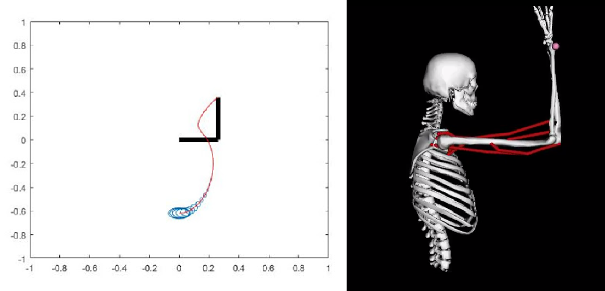
Trajectory Optimization of Human Arm Reaching Model in OpenSim
- Goal: Explore optimal control strategies for human arm movement in a biomechanical simulation.
- Contribution: Implemented the iterative Linear Quadratic Regulator (iLQR) algorithm for an object-reaching task in a sagittal-plane human arm model.
- Outcomes: Demonstrated efficient trajectory optimization and control performance for simulated arm reaching movements.
- Skills: Optimal control, biomechanics, trajectory optimization, simulation.
- Tools: MATLAB, OpenSim.
- Reference: [GitHub Repository]
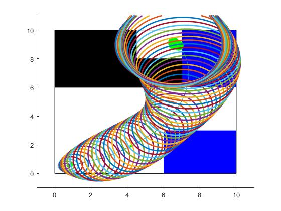
Safe Feedback Motion Planning with Unknown Dynamics for Car Model in MATLAB
- Goal: Improve motion planning performance for mobile robots by combining trajectory optimization with feedback control.
- Contribution: Augmented stochastic trajectory optimization with Linear Quadratic Regulator (LQR) feedback control in MATLAB.
- Outcomes: Achieved more stable and efficient motion planning, enhancing robustness to disturbances in mobile robot trajectories.
- Skills: Motion planning, optimal control, trajectory optimization, feedback control systems.
- Tools: MATLAB.
- Reference: [GitHub Repository]